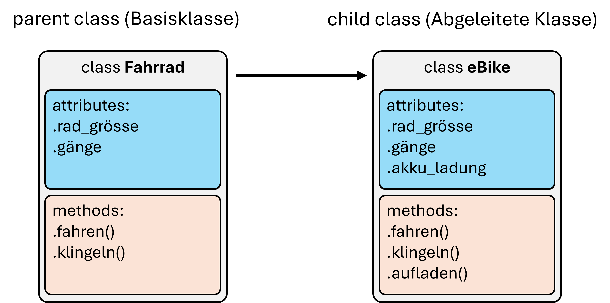

15. Objektorientierte Programmierung in Python – Teil 2#
In der letzten Einheit haben wir eigene Klassen definiert, Objekte erzeugt und ihren Zustand über Attribute und Methoden verändert. Als größeres Beispiel diente ein Elevator: Er kann einen aktuellen Zustand besitzen, Methoden ausführen und mit einem Display-Objekt zusammenarbeiten.
In diesem zweiten Teil geht es weniger darum, noch mehr Syntax kennenzulernen. Stattdessen schauen wir uns an, wie mehrere Objekte zusammenarbeiten und wie Klassen sinnvoll zueinander in Beziehung stehen können.
Im Mittelpunkt stehen dabei:
Objekte als Attribute und in Listen,
gemeinsame Referenzen auf dasselbe Objekt,
Komposition: ein Objekt hat andere Objekte,
Vererbung: ein Objekt ist eine spezielle Form eines anderen Typs,
super(), Überschreiben von Methoden undisinstance(),sowie die Verteilung mehrerer Klassen auf verschiedene Module.
15.1. Objekte können andere Objekte enthalten#
Schon im letzten Kapitel hatten wir einen kleinen Display-Datentyp:
class Display:
def __init__(self):
self.message = ""
def show(self, message):
self.message = message
return self.message
Ein Elevator kann ein solches Display als Attribut besitzen. Wichtig ist dabei: Wir erzeugen das Display außerhalb des Aufzugs und übergeben das bereits existierende Objekt an den Konstruktor.
class Elevator:
def __init__(self, name, accessible_levels, display):
self.name = name
self.accessible_levels = list(accessible_levels)
self.current_level = 0
self.display = display
def description(self):
return f"Aufzug {self.name}: Etage {self.current_level}"
def move_to(self, level):
if level not in self.accessible_levels:
return False
if level == self.current_level:
return False
self.current_level = level
self.display.show(f"Aufzug {self.name}: Etage {level}")
return True
main_display = Display()
elevator = Elevator("A", [-1, 0, 1, 2, 3], main_display)
print(elevator.display is main_display) # => True
Das ist ein wichtiger Punkt: main_display und elevator.display verweisen auf dasselbe Objekt.
Der Aufzug hat also keine Kopie des Displays erhalten.
main_display.show("Wartung")
print(main_display.message) # => Wartung
print(elevator.display.message) # => Wartung
Die Änderung ist über beide Zugänge sichtbar, weil beide Namen auf dasselbe Objekt verweisen.
Genau wie bei Listen oder Dictionaries gilt also auch für selbst definierte Objekte: Wenn wir ein Objekt weitergeben, erzeugen wir dadurch nicht automatisch eine Kopie.
15.2. Mehrere Objekte verwalten#
Ein Gebäude kann mehrere Aufzüge besitzen. Dafür können wir eine weitere Klasse verwenden:
class Building:
def __init__(self, name):
self.name = name
self.elevators = []
def add_elevator(self, elevator):
self.elevators.append(elevator)
def number_of_elevators(self):
return len(self.elevators)
Jedes Building-Objekt bekommt dabei seine eigene Liste.
building_a = Building("Hauptgebäude")
building_b = Building("Labor")
display_a = Display()
display_b = Display()
elevator_a = Elevator("A", [-1, 0, 1, 2, 3], display_a)
elevator_b = Elevator("B", [0, 1, 2, 3, 4], display_b)
building_a.add_elevator(elevator_a)
building_a.add_elevator(elevator_b)
print(building_a.number_of_elevators()) # => 2
print(building_b.number_of_elevators()) # => 0
print(building_a.elevators is building_b.elevators) # => False
self.elevators = [] muss deshalb in __init__() stehen. Würden mehrere Gebäude dieselbe Liste teilen, hätten wir sehr schnell schwer nachvollziehbare Seiteneffekte.
15.2.1. Methoden von enthaltenen Objekten nutzen#
Eine verwaltende Klasse muss nicht alle Informationen selbst noch einmal speichern.
Wenn wir Beschreibungen aller Aufzüge wollen, können wir einfach die bereits vorhandene Methode jedes Elevator-Objekts aufrufen:
class Building:
def __init__(self, name):
self.name = name
self.elevators = []
def add_elevator(self, elevator):
self.elevators.append(elevator)
def descriptions(self):
result = []
for elevator in self.elevators:
result.append(elevator.description())
return result
building = Building("Hauptgebäude")
building.add_elevator(
Elevator("A", [-1, 0, 1, 2, 3], Display())
)
building.add_elevator(
Elevator("B", [0, 1, 2, 3, 4], Display())
)
print(building.descriptions())
# => ['Aufzug A: Etage 0', 'Aufzug B: Etage 0']
Die Liste building.elevators enthält weiterhin Elevator-Objekte. descriptions() erzeugt lediglich eine neue Liste mit den zurückgegebenen Strings.
Das ist oft ein guter OOP-Stil: Die Klasse Building verwaltet die Objekte, aber die Objekte selbst wissen, wie sie sich beschreiben.
15.2.2. Verhalten delegieren#
Das gleiche Prinzip gilt für Aktionen. Ein Gebäude könnte zum Beispiel alle Aufzüge ins Erdgeschoss schicken:
class Building:
def __init__(self, name):
self.name = name
self.elevators = []
def add_elevator(self, elevator):
self.elevators.append(elevator)
def move_all_to(self, level):
results = []
for elevator in self.elevators:
results.append(elevator.move_to(level))
return results
building = Building("Hauptgebäude")
elevator_a = Elevator("A", [-1, 0, 1, 2, 3], Display())
elevator_b = Elevator("B", [0, 1, 2, 3, 4], Display())
elevator_a.move_to(2)
elevator_b.move_to(3)
building.add_elevator(elevator_a)
building.add_elevator(elevator_b)
print(building.move_all_to(0)) # => [True, True]
print(elevator_a.current_level) # => 0
print(elevator_b.current_level) # => 0
Building.move_all_to() verändert nicht selbst die Attribute current_level. Die Methode delegiert die eigentliche Aktion an die enthaltenen Elevator-Objekte.
Damit vermeiden wir auch einen typischen Fehler: denselben Zustand an mehreren Stellen zu speichern.
15.3. Hat-ein oder Ist-ein?#
Wenn zwei Klassen miteinander zu tun haben, gibt es zwei sehr unterschiedliche Beziehungen.
15.3.1. Hat-ein: Komposition#
Ein Gebäude hat Aufzüge.
Ein Aufzug hat ein Display.
Das sind Beispiele für Komposition: Ein Objekt enthält oder verwendet andere Objekte.
Building
└── Elevator
└── Display
15.3.2. Ist-ein: Vererbung#
Manchmal ist ein neuer Typ dagegen eine speziellere Form eines bereits vorhandenen Typs.
Ein Lastenaufzug ist ein Aufzug.
Hier kann Vererbung sinnvoll sein.
Nicht jede Beziehung zwischen zwei Klassen sollte über Vererbung gelöst werden. Die Frage
„Ist X wirklich eine spezielle Form von Y?“
ist oft ein guter erster Test.
Ein Gebäude ist zum Beispiel kein Aufzug. Deshalb wäre class Building(Elevator) kein sinnvolles Modell.
15.4. Vererbung#
Im Fahrrad-Beispiel aus dem vorherigen Kapitel wäre das in etwa eine Unterart von Fahrrad die aber die Kerneigenschaften von Fahrrad übernehmen (also „erben“) soll, z.B. ein eBike.

Wir verwenden für die folgenden Beispiele eine etwas kompaktere Elevator-Klasse:
class Elevator:
def __init__(self, name, accessible_levels):
self.name = name
self.accessible_levels = list(accessible_levels)
self.current_level = 0
def description(self):
return f"Aufzug {self.name}: Etage {self.current_level}"
def move_to(self, level):
if level not in self.accessible_levels:
return False
if level == self.current_level:
return False
self.current_level = level
return True
Jetzt definieren wir eine Unterklasse:
class FreightElevator(Elevator):
pass
Obwohl FreightElevator selbst noch keine Methoden enthält, erbt die Klasse die Funktionalität von Elevator.
freight = FreightElevator("F1", [-1, 0, 1, 2])
print(freight.description()) # => Aufzug F1: Etage 0
print(freight.move_to(2)) # => True
print(freight.current_level) # => 2
FreightElevator hat hier sowohl die Initialisierung als auch die Methoden von Elevator geerbt.
Wir nennen:
Elevatordie Basisklasse oder Oberklasse,FreightElevatordie Unterklasse oder abgeleitete Klasse.
15.5. Zusätzliche Attribute mit super()#
Ein Lastenaufzug braucht vielleicht eine zusätzliche Information, die normale Aufzüge nicht besitzen: seine maximale Last.
Dann definieren wir einen eigenen Konstruktor:
class Elevator:
def __init__(self, name, accessible_levels):
self.name = name
self.accessible_levels = list(accessible_levels)
self.current_level = 0
def description(self):
return f"Aufzug {self.name}: Etage {self.current_level}"
def move_to(self, level):
if level not in self.accessible_levels:
return False
if level == self.current_level:
return False
self.current_level = level
return True
class FreightElevator(Elevator):
def __init__(self, name, accessible_levels, max_load):
super().__init__(name, accessible_levels)
self.max_load = max_load
Mit super().__init__(name, accessible_levels) rufen wir die Initialisierung der Basisklasse auf. Dort werden name, accessible_levels und current_level gesetzt.
Danach ergänzt die Unterklasse nur noch ihr zusätzliches Attribut max_load.
freight = FreightElevator(
"F1",
[-1, 0, 1, 2],
max_load=1600,
)
print(freight.name) # => F1
print(freight.current_level) # => 0
print(freight.max_load) # => 1600
Ohne den Aufruf von super().__init__(...) müssten wir die Initialisierung der Basisklasse wiederholen oder die entsprechenden Attribute würden fehlen.
15.6. Methoden überschreiben#
Eine Unterklasse kann eine geerbte Methode durch eine eigene Version ersetzen.
Für den Lastenaufzug wollen wir eine ausführlichere Beschreibung:
class Elevator:
def __init__(self, name, accessible_levels):
self.name = name
self.accessible_levels = list(accessible_levels)
self.current_level = 0
def description(self):
return f"Aufzug {self.name}: Etage {self.current_level}"
class FreightElevator(Elevator):
def __init__(self, name, accessible_levels, max_load):
super().__init__(name, accessible_levels)
self.max_load = max_load
def description(self):
return (
f"Lastenaufzug {self.name}: "
f"Etage {self.current_level}, "
f"max. {self.max_load} kg"
)
normal = Elevator("A", [-1, 0, 1, 2, 3])
freight = FreightElevator("F1", [-1, 0, 1, 2], 1600)
print(normal.description())
# => Aufzug A: Etage 0
print(freight.description())
# => Lastenaufzug F1: Etage 0, max. 1600 kg
Beide Objekte besitzen eine Methode namens description(). Welche Version ausgeführt wird, hängt aber vom tatsächlichen Objekt ab.
Das nennt man Überschreiben (method overriding).
15.6.1. Eine vorhandene Methode erweitern#
Manchmal wollen wir die Methode der Basisklasse nicht komplett neu schreiben, sondern nur ihr Ergebnis ergänzen.
Auch dafür kann super() verwendet werden:
class Elevator:
def __init__(self, name, accessible_levels):
self.name = name
self.accessible_levels = list(accessible_levels)
self.current_level = 0
def description(self):
return f"Aufzug {self.name}: Etage {self.current_level}"
class FreightElevator(Elevator):
def __init__(self, name, accessible_levels, max_load):
super().__init__(name, accessible_levels)
self.max_load = max_load
def description(self):
base_text = super().description()
return f"{base_text}, max. {self.max_load} kg"
freight = FreightElevator("F1", [-1, 0, 1, 2], 1600)
print(freight.description())
# => Aufzug F1: Etage 0, max. 1600 kg
15.7. isinstance(): Gehört ein Objekt zu diesem Typ?#
Mit isinstance() können wir prüfen, ob ein Objekt eine Instanz einer bestimmten Klasse ist.
Bei Vererbung ist dabei wichtig: Ein Objekt einer Unterklasse gilt auch als Objekt der Basisklasse.
class Elevator:
pass
class FreightElevator(Elevator):
pass
normal = Elevator()
freight = FreightElevator()
print(isinstance(normal, Elevator)) # => True
print(isinstance(normal, FreightElevator)) # => False
print(isinstance(freight, FreightElevator)) # => True
print(isinstance(freight, Elevator)) # => True
Der letzte Wert ist besonders wichtig.
Ein FreightElevator ist ein Elevator.
Ein exakter Typvergleich beantwortet dagegen eine engere Frage:
print(type(freight) is FreightElevator) # => True
print(type(freight) is Elevator) # => False
Für viele OOP-Anwendungen ist isinstance() deshalb passender als ein exakter Vergleich mit type(...).
Wenn eine Funktion oder Sammlung „alle Aufzüge“ akzeptieren soll, möchten wir normalerweise auch Unterklassen akzeptieren.
15.8. Typprüfung beim Aufnehmen von Objekten#
Wir können jetzt unsere verwaltende Klasse entsprechend absichern:
class Elevator:
def __init__(self, name):
self.name = name
def description(self):
return f"Aufzug {self.name}"
class FreightElevator(Elevator):
def __init__(self, name, max_load):
super().__init__(name)
self.max_load = max_load
def description(self):
return f"Lastenaufzug {self.name}, max. {self.max_load} kg"
class Building:
def __init__(self, name):
self.name = name
self.elevators = []
def add_elevator(self, elevator):
if not isinstance(elevator, Elevator):
return False
self.elevators.append(elevator)
return True
def descriptions(self):
result = []
for elevator in self.elevators:
result.append(elevator.description())
return result
building = Building("Hauptgebäude")
normal = Elevator("A")
freight = FreightElevator("F1", 1600)
print(building.add_elevator(normal)) # => True
print(building.add_elevator(freight)) # => True
print(building.add_elevator("kein Aufzug")) # => False
print(len(building.elevators)) # => 2
print(building.descriptions())
# => ['Aufzug A', 'Lastenaufzug F1, max. 1600 kg']
Hier sieht man mehrere OOP-Ideen zusammen:
Buildinghat eine Liste von Aufzügen.Die Liste enthält die bereits erzeugten Objekte.
FreightElevatorist einElevator.Deshalb akzeptiert
isinstance(freight, Elevator)auch die Unterklasse.descriptions()ruft einfach bei jedem Objektdescription()auf.Beim Lastenaufzug wird automatisch die überschriebene Version verwendet.
Die verwaltende Klasse muss dafür nicht mit if type(...) == ... zwischen allen Unterklassen unterscheiden.
15.9. Klassen auf mehrere Dateien verteilen#
Bei mehreren Klassen wird es schnell sinnvoll, den Code auf Module zu verteilen.
Eine mögliche Struktur wäre:
projekt/
├── elevators.py
├── building.py
└── main.py
15.9.1. elevators.py#
# elevators.py
class Elevator:
def __init__(self, name):
self.name = name
def description(self):
return f"Aufzug {self.name}"
class FreightElevator(Elevator):
def __init__(self, name, max_load):
super().__init__(name)
self.max_load = max_load
def description(self):
return f"Lastenaufzug {self.name}, max. {self.max_load} kg"
15.9.2. building.py#
# building.py
import elevators
class Building:
def __init__(self, name):
self.name = name
self.elevators = []
def add_elevator(self, elevator):
if not isinstance(elevator, elevators.Elevator):
return False
self.elevators.append(elevator)
return True
def descriptions(self):
return [
elevator.description()
for elevator in self.elevators
]
15.9.3. main.py#
# main.py
import building
import elevators
office = building.Building("Hauptgebäude")
office.add_elevator(elevators.Elevator("A"))
office.add_elevator(
elevators.FreightElevator("F1", 1600)
)
print(office.descriptions())
Die Abhängigkeiten laufen hier in eine klare Richtung:
main.py
├── building.py
│ └── elevators.py
└── elevators.py
elevators.py muss nichts über Building wissen und importiert building.py deshalb nicht.
So werden unnötige zyklische Importe vermieden, bei denen sich zwei Module gegenseitig importieren.
15.10. Getter, Setter und Properties#
Bisher haben wir Attribute unserer Objekte meistens direkt gelesen und verändert. Bei einem Elevator könnten wir zum Beispiel schreiben:
elevator.level = 3
Das ist technisch möglich, kann aber problematisch sein. Der Aufzug könnte dadurch plötzlich auf einer Etage stehen, die gar nicht erreichbar ist. Außerdem würden dabei andere Regeln umgangen: Vielleicht darf sich der Aufzug bei geöffneter Tür nicht bewegen oder bei einer Bewegung müsste zusätzlich ein Display aktualisiert werden.
Darum kann es sinnvoll sein, bestimmte Attribute als interne Attribute zu behandeln. In Python wird dafür üblicherweise ein führender Unterstrich verwendet:
self._level = 0
Der Unterstrich verhindert den Zugriff nicht technisch. Er signalisiert aber: Dieses Attribut gehört zur internen Implementierung der Klasse und sollte von außen nicht direkt verändert werden.
Eine klassische Möglichkeit wäre, eigene Getter- und Setter-Methoden anzubieten:
def get_level(self):
return self._level
def set_level(self, new_level):
if new_level in self.accessible_levels:
self._level = new_level
Ein Getter liest dabei einen Wert, während ein Setter kontrolliert, wie ein Wert verändert werden darf.
In Python wird für solche Zugriffe allerdings häufig @property verwendet.
Damit können wir nach außen weiterhin einen normalen Attributzugriff anbieten, obwohl intern eine Methode ausgeführt wird.
Für unseren Aufzug ist es sinnvoll, die aktuelle Etage von außen lesen, aber nicht direkt setzen zu können. Änderungen sollen ausschließlich über move_to() stattfinden:
class Elevator:
def __init__(self, name, accessible_levels):
self.name = name
self.accessible_levels = list(accessible_levels)
self._level = 0
self._door_open = False
@property
def level(self):
return self._level
@property
def door_open(self):
return self._door_open
def open_door(self):
if self._door_open:
return False
self._door_open = True
return True
def close_door(self):
if not self._door_open:
return False
self._door_open = False
return True
def move_to(self, new_level):
if self._door_open:
return False
if new_level not in self.accessible_levels:
return False
if new_level == self._level:
return False
self._level = new_level
return True
def description(self):
door = "offen" if self._door_open else "geschlossen"
return (
f"Aufzug {self.name}: "
f"Etage {self._level}, Tür {door}"
)
Jetzt können wir die aktuelle Etage bequem lesen:
elevator = Elevator("A", [-1, 0, 1, 2, 3])
print(elevator.level) # => 0
print(elevator.door_open) # => False
print(elevator.move_to(2)) # => True
print(elevator.level) # => 2
Aber dieser Zugriff funktioniert absichtlich nicht:
elevator.level = 3
# => AttributeError: property 'level' of 'Elevator' object has no setter
Wir haben für level zwar einen Getter über @property definiert, aber keinen Setter. Dadurch kann Code außerhalb der Klasse die aktuelle Etage lesen, aber nicht versehentlich mit einer einfachen Zuweisung verändern.
Wenn ein direktes Setzen sinnvoll wäre, könnte eine Property zusätzlich einen Setter bekommen:
@property
def level(self):
return self._level
@level.setter
def level(self, new_level):
if new_level not in self.accessible_levels:
raise ValueError("Etage ist nicht erreichbar.")
self._level = new_level
Dann wäre auch
elevator.level = 2
möglich, wobei im Hintergrund die Setter-Methode ausgeführt würde.
Für unseren Elevator ist das aber gerade nicht die beste Schnittstelle: Eine Bewegung besteht aus mehr als einer einfachen Wertzuweisung. Deshalb bleibt level nach außen nur lesbar und Zustandsänderungen laufen kontrolliert über move_to().
Das ist eine wichtige Idee der Kapselung: Nicht jeder interne Zustand eines Objekts muss von außen beliebig verändert werden können. Eine Klasse kann stattdessen eine kleine, klar definierte Schnittstelle anbieten und selbst dafür sorgen, dass ihre Objekte in einem sinnvollen Zustand bleiben.
15.11. Ausblick#
Mit Klassen, Objekten, Komposition und Vererbung haben wir nur einen ersten Teil der Möglichkeiten objektorientierter Programmierung kennengelernt. In größeren Python-Projekten kommen weitere Konzepte dazu, zum Beispiel Klassenmethoden, Properties oder abstrakte Basisklassen. Sie helfen dabei, die öffentliche Schnittstelle einer Klasse klarer zu gestalten und genauer festzulegen, wie Objekte erzeugt oder verwendet werden sollen.
Außerdem können Klassen in Python durch sogenannte Magic Methods enger mit der Sprache zusammenarbeiten.
Methoden wie __str__(), __eq__() oder __len__() legen beispielsweise fest, wie ein Objekt als Text dargestellt, mit einem anderen Objekt verglichen oder mit len() verwendet wird.
Dadurch können selbst definierte Klassen sich ähnlich natürlich verhalten wie eingebaute Python-Typen.
Mit zunehmender Größe eines Programms wird außerdem immer wichtiger, wann eine neue Klasse überhaupt sinnvoll ist und wie Klassen zusammenarbeiten sollen. Vererbung ist dabei nur eine Möglichkeit, häufig ist eine einfache Komposition mehrerer kleiner Objekte die übersichtlichere Lösung. Die Frage, welche Daten und welches Verhalten zu welchem Objekt gehören, bleibt auch bei deutlich größeren Softwareprojekten zentral.